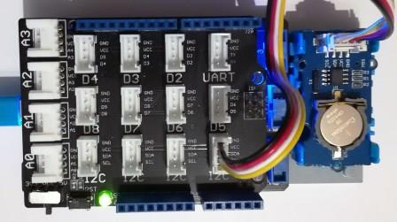

Version: 0.8.0
Grove Rtc is connected as followed on Netduino 3:

| Grove Rtc | Mainboard |
|---|---|
| I2C Socket | I2C Socket |
using System.Diagnostics;
using System.Threading;
using Bauland.Grove;
using Bauland.Pins;
namespace TestRtc
{
static class Program
{
static void Main()
{
// Grove Rtc module is connected on I2C bus of Netduino 3 with base shield
Rtc rtc = new Rtc(Netduino3.I2cBus.I2c);
while (true)
{
rtc.GetTime();
Display(rtc);
Thread.Sleep(1000);
}
}
private static void Display(Rtc rtc)
{
Debug.WriteLine("Date: " + rtc.DayOfWeek + " " + rtc.Day + "/" + rtc.Month + "/" + rtc.Year);
Debug.WriteLine("Time: " + rtc.Hours + ":" + rtc.Minutes + ":" + rtc.Seconds);
}
private static void SetTime(Rtc rtc)
{
// To set Rtc with winter time
rtc.GetTime();
rtc.Hours += 1;
rtc.SetTime();
// To set Rtc with specific Date/Time
rtc.Year = 2018;
rtc.Month = 02;
rtc.Day = 23;
rtc.DayOfWeek = DayOfWeek.Friday;
rtc.Hours = 18;
rtc.Minutes = 30;
rtc.Seconds = 30;
rtc.SetTime();
}
}
}